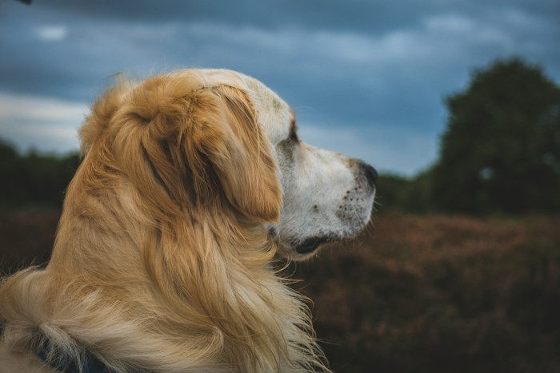
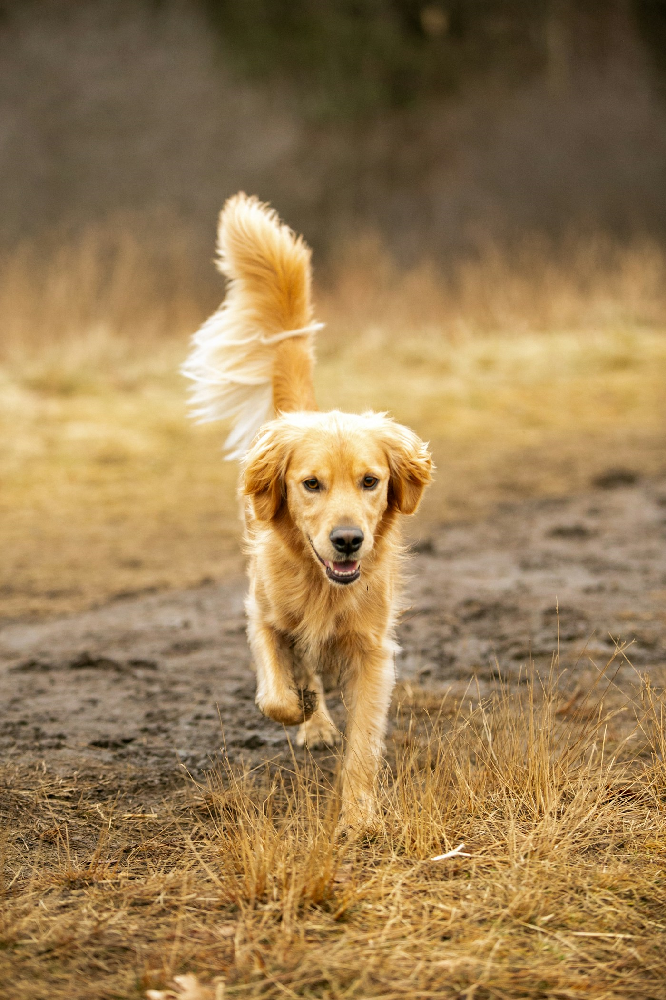
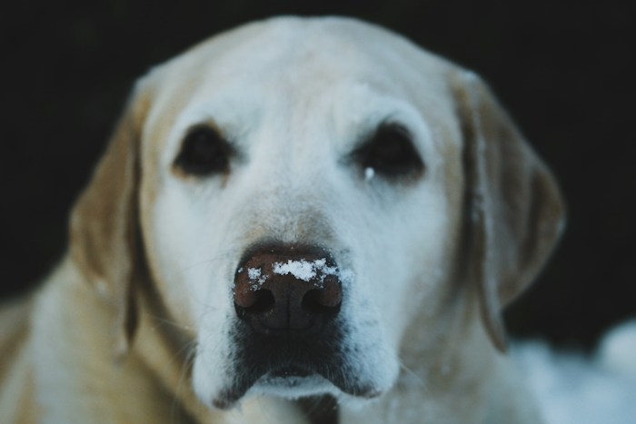
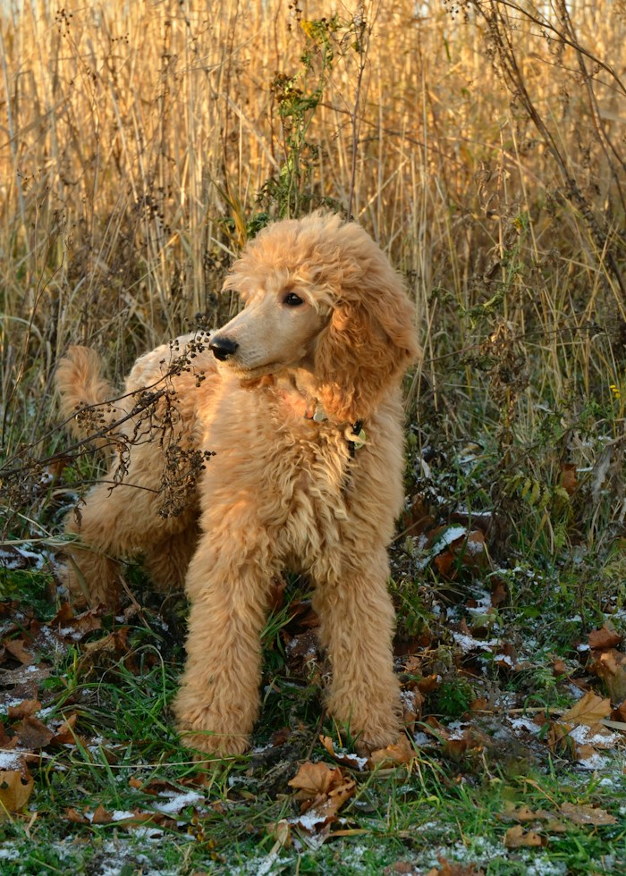
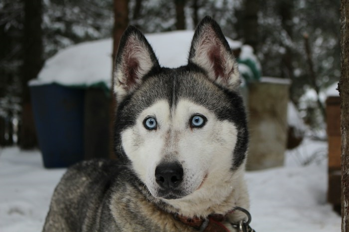
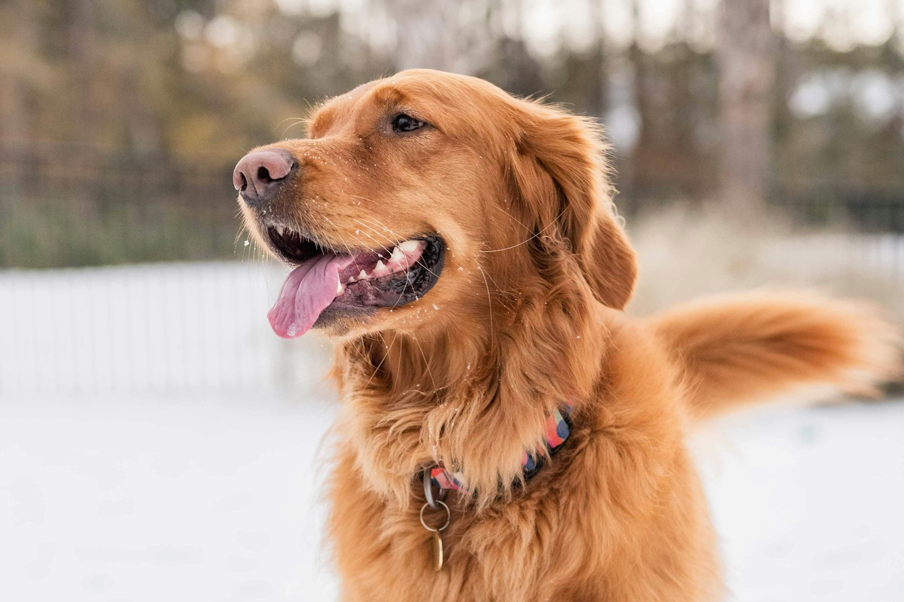

Golden Retriever
Dócil, paciente e sociável. Ótimo com crianças e com toda a família.
- Porte: grande
- Temperamento: amigável e obediente
- Vida média: 10 a 12 anos
Descubra raças, aprenda sobre cuidados e ofereça uma vida mais saudável e feliz ao seu melhor amigo.

Pesquise entre centenas de raças e abra cada cartão para consultar suas características.

Dócil, paciente e sociável. Ótimo com crianças e com toda a família.

Ativo, leal e curioso. Adora brincar e aprende rápido com treino positivo.

Inteligente e elegante. Existe em vários tamanhos e pede escovação frequente.

Enérgico e independente. Precisa de muito exercício e de rotina de passeios.
Orientações práticas para criar uma rotina mais saudável, segura e feliz em cada fase da vida do seu cão.
Uma alimentação equilibrada ajuda a manter a energia e o peso adequados. As necessidades mudam conforme idade, porte, saúde e nível de atividade.
Dica: mudanças de dieta devem ser graduais e orientadas quando houver doença ou necessidade especial.
Prevenção e acompanhamento profissional ajudam a identificar necessidades cedo e a cuidar do bem-estar do seu companheiro.
Importante: não ofereça medicamentos humanos nem substitua uma avaliação veterinária por orientações da internet.
Uma rotina previsível, atividades adequadas e interações gentis ajudam o cão a se sentir seguro e a conviver melhor com a família.
Observe seu cão: sinais de medo ou desconforto pedem espaço e uma abordagem tranquila, sem punições.

Um cão não precisa de uma vida perfeita. Precisa de alguém que cuide dele com amor.